1 Μεταβολές ημιτόνου, συνημιτόνου και εφαπτομένης
1.1 Η χρήση του υπολογιστή τσέπης για τον υπολογισμό του ημιτόνου, του συνημιτόνου και της εφαπτομένης μιας γωνίας ω
Επειδή ο υπολογισμός του ημιτόνου, του συνημιτόνου και της εφαπτομένης μιας γωνίας δεν είναι απλή διαδικασία, χρησιμοποιούμε συχνά έναν επιστημονικό υπολογιστή τσέπης. Οι υπολογιστές αυτοί περιλαμβάνουν ειδικά πλήκτρα για κάθε τριγωνομετρικό αριθμό: το πρώτο υπολογίζει το ημίτονο, το δεύτερο το συνημίτονο και το τρίτο την εφαπτομένη.
Η διαδικασία υπολογισμού ακολουθεί συνήθως τα εξής βήματα:
- Ρύθμιση μονάδων: Πατάμε το πλήκτρο που ορίζει τη μονάδα μέτρησης των γωνιών σε μοίρες. Αν και το πλήκτρο διαφέρει ανάλογα με το μοντέλο, η ένδειξη που επιβεβαιώνει τη σωστή ρύθμιση είναι συνήθως η ένδειξη DEG στην οθόνη.
- Εισαγωγή δεδομένων: Για να υπολογίσουμε, για παράδειγμα, το ημίτονο των 63°, πατάμε διαδοχικά τα κατάλληλα πλήκτρα (στοιχεία γωνίας και λειτουργία ημιτόνου).
- Αποτέλεσμα: Στην οθόνη παρουσιάζεται η τιμή του τριγωνομετρικού αριθμού (π.χ. για το ημ63° εμφανίζεται ο αριθμός 0,891).
Αντίστοιχη διαδικασία ακολουθείται και για το συνημίτονο ή την εφαπτομένη πατώντας τα ανάλογα πλήκτρα.
Εναλλακτική μέθοδος: Εκτός από τον υπολογιστή τσέπης, για τις σχολικές ασκήσεις μπορεί να χρησιμοποιηθεί και ο πίνακας τριγωνομετρικών αριθμών που βρίσκεται στο τέλος του βιβλίου σας ή στον σύνδεσμο
Ανατρέξτε στους τριγωνομετρικούς πίνακες, ο οποίος περιλαμβάνει τις τιμές για γωνίες από 1° έως 89°.
Δείτε σε εικόνες
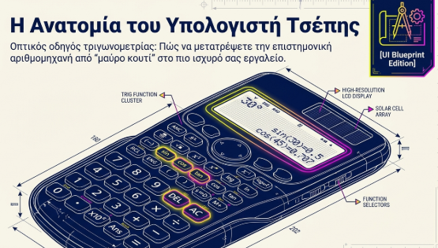
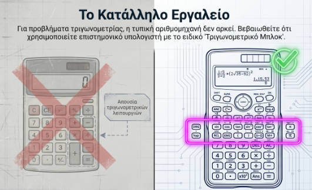
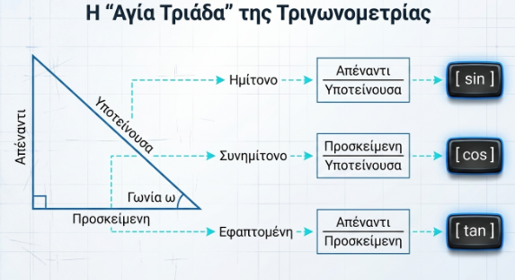
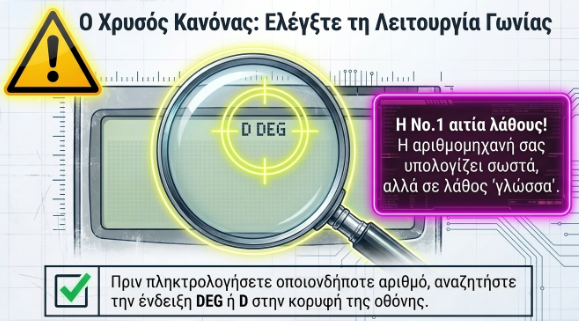
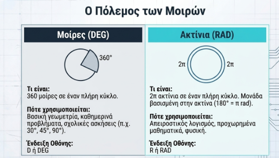
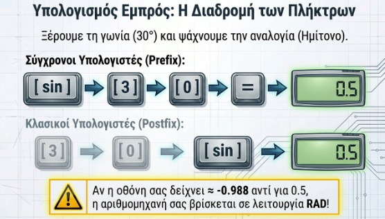
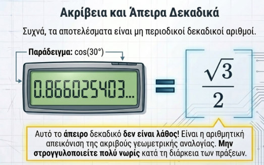
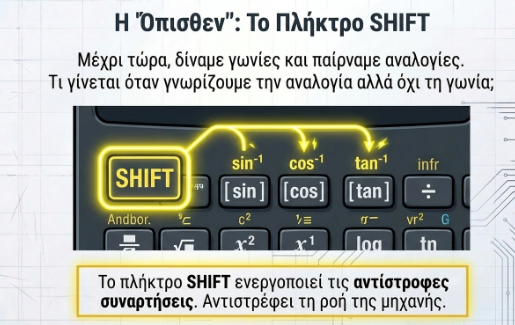
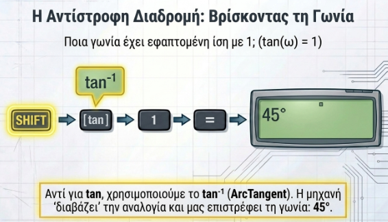
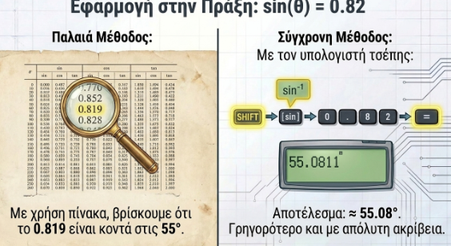
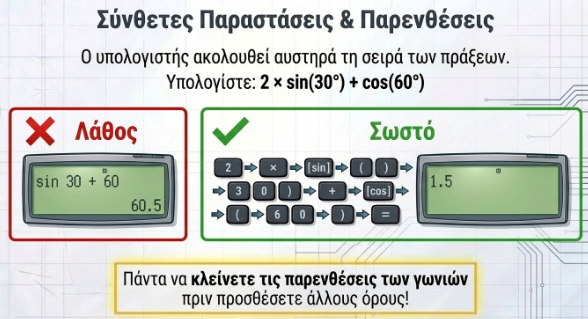
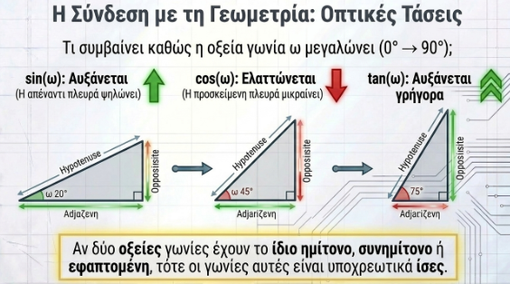
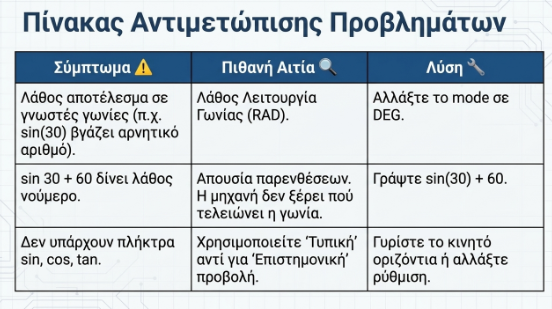
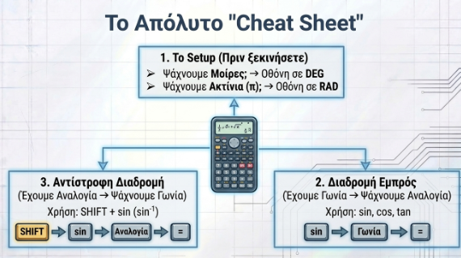
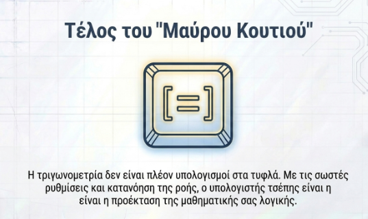
Μερικά λινκ
OKCALC
Ακόμη και στην γραμμή αναζήτησης της google μπορείτε όχι μόνο να υπολογίσετε τριγωνομετρικούς αριθμούς αλλά και να κένετε ότι πράξεις θέλετε.
Επίσης μπορείτε να χρησημοποιήσετε την αριθμομηχανή των Windows ή του τηλεφώνου σας.
1.2 Μεταβολές ημιτόνου, συνημιτόνου και εφαπτομένης οξείας γωνίας ω
Όταν μια οξεία γωνία \(\omega\) μεταβάλλεται από τις \(0^{\circ}\) προς τις \(90^{\circ}\), οι τριγωνομετρικοί της αριθμοί παρουσιάζουν την εξής συμπεριφορά:
Ημίτονο (\(\mathbf{ημω}\)): Όταν η γωνία αυξάνεται, το ημίτονό της αυξάνεται.
Για παράδειγμα, ισχύει ότι \(ημ13^ο < ημ15^ο\).
Συνημίτονο (\(\mathbf{συνω}\)): Όταν η γωνία αυξάνεται, το συνημίτονό της ελαττώνεται.
Για παράδειγμα, το \(συν27^o\) είναι μεγαλύτερο από το \(συν59^ο\).
Εφαπτομένη (\(\mathbf{εφω}\)): Όταν η γωνία αυξάνεται, η εφαπτομένη της αυξάνεται.
1.2.1 Γεωμετρική Ερμηνεία
Η μεταβολή αυτή μπορεί να εξηγηθεί γεωμετρικά μέσω ορθογωνίων τριγώνων:
- Για το ημίτονο και το συνημίτονο: Αν θεωρήσουμε ορθογώνια τρίγωνα με σταθερή υποτείνουσα, (την ακτίνα ενός κύκλου για παράδειγμα όπως στην παρακάτω εικόνα), παρατηρούμε ότι καθώς η οξεία γωνία μεγαλώνει, η απέναντι κάθετη πλευρά αυξάνεται (άρα αυξάνεται το ημίτονο), ενώ η προσκείμενη κάθετη πλευρά μικραίνει (άρα μειώνεται το συνημίτονο).
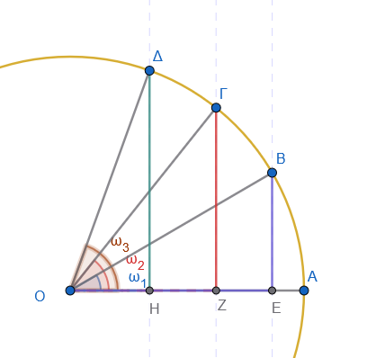
- Για την εφαπτομένη: Αν θεωρήσουμε ορθογώνια τρίγωνα με σταθερή τη μία κάθετη πλευρά (την προσκείμενη), (για παράδειγμα την ακτίνα ενός κύκλου όπως φαίνεται στην παρακάτω εικόνα), παρατηρούμε ότι καθώς η οξεία γωνία μεγαλώνει, η απέναντι κάθετη πλευρά μεγαλώνει επίσης, επομένως ο λόγος τους (η εφαπτομένη) αυξάνεται.
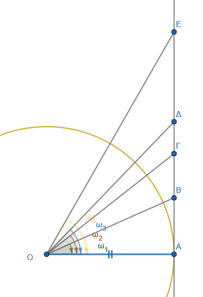
1.2.2 Σημαντικά Συμπεράσματα
Λόγω αυτής της μονοτονίας, οι τριγωνομετρικοί αριθμοί αποτελούν κατά κάποιο τρόπο την «ταυτότητα» της οξείας γωνίας. Αυτό σημαίνει ότι:
- Αν δύο οξείες γωνίες έχουν ίσα ημίτονα, τότε οι γωνίες είναι ίσες.
- Αν δύο οξείες γωνίες έχουν ίσα συνημίτονα, τότε οι γωνίες είναι ίσες.
- Αν δύο οξείες γωνίες έχουν ίσες εφαπτόμενες, τότε οι γωνίες είναι ίσες.
Επιπλέον, για κάθε οξεία γωνία \(ω\), οι τιμές του ημιτόνου και του συνημιτόνου κυμαίνονται πάντα μεταξύ του 0 και του 1 (\(0 < ημω < 1\) και \(0 <συνω < 1\)), καθώς σε ένα ορθογώνιο τρίγωνο η υποτείνουσα είναι πάντα μεγαλύτερη από τις κάθετες πλευρές.
Αντίθετα, η εφαπτομένη μιας οξείας γωνίας μπορεί να πάρει οποιαδήποτε θετική τιμή.
Δείτε τις παρακάτω εικόνες
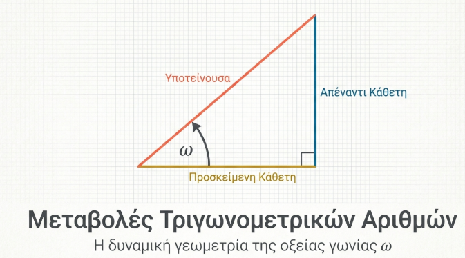
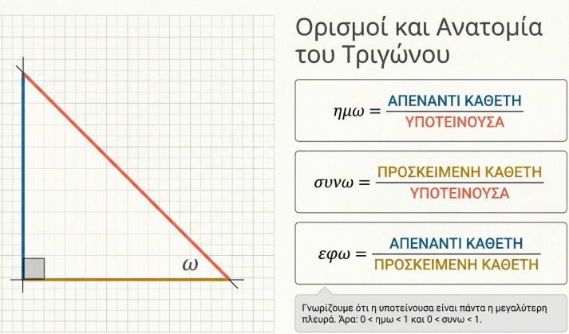
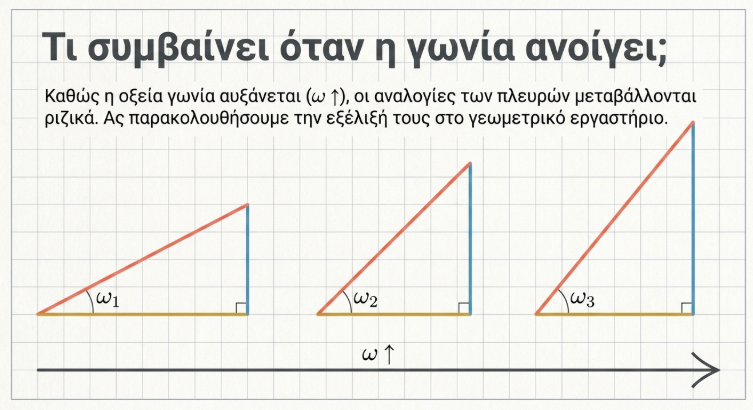
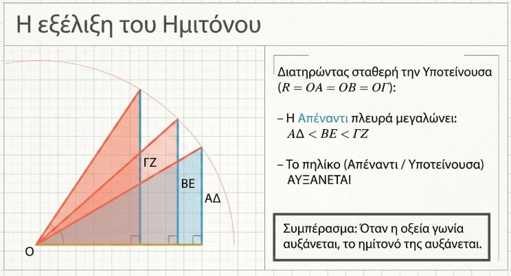
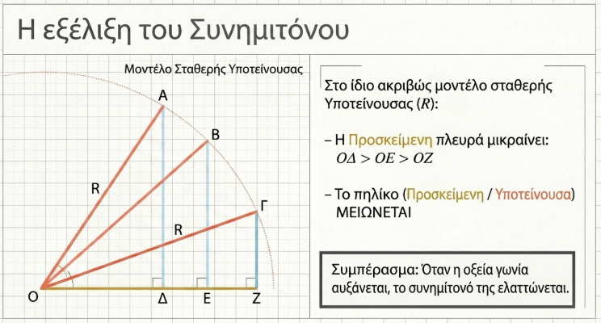
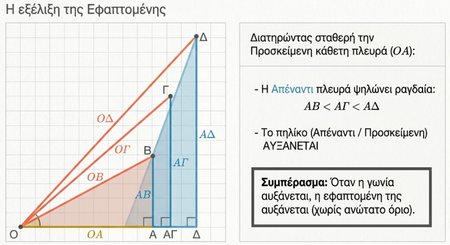
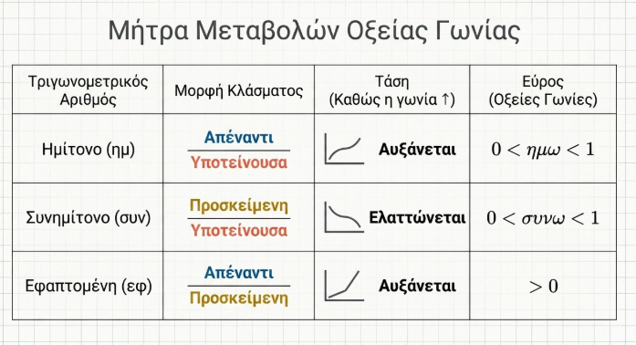
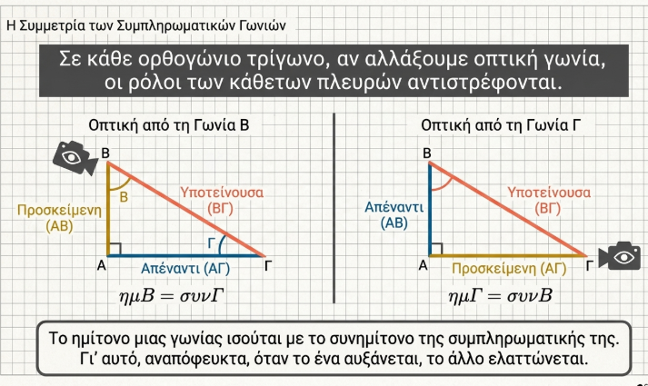
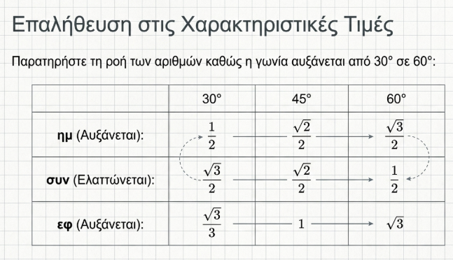
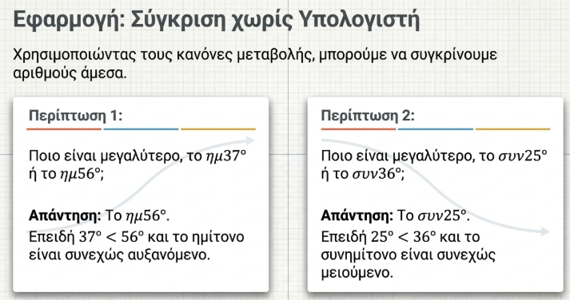
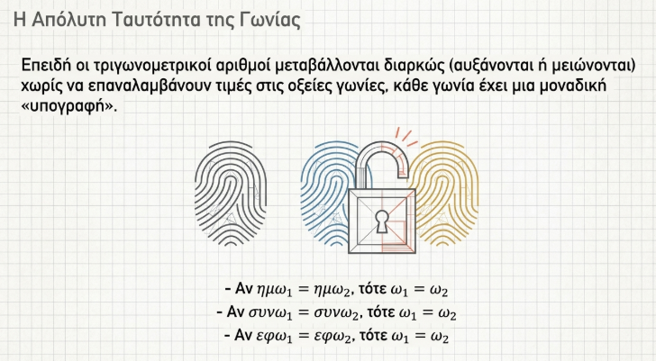
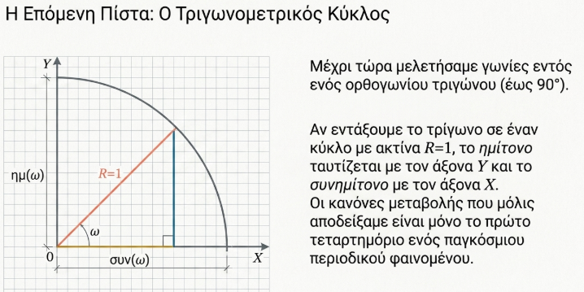
1.3 Ασκήσεις
Υπολογίστε το χ στα παρακάτω σχήματα
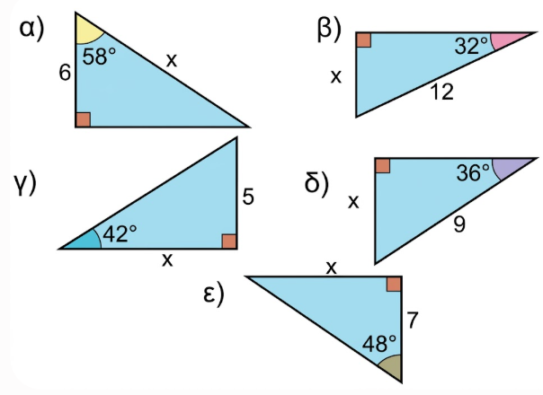
Υπολογίστε τις άλλες δύο πλευρές σε καθένα από τα παρακάτω σχήματα
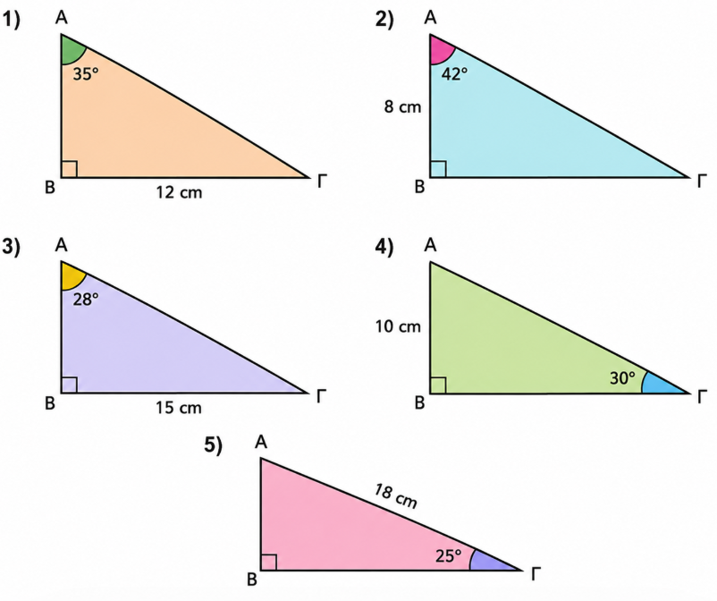
Το Κατάρτι και τα Σχοινιά Σε ένα ιστιοπλοϊκό σκάφος, το ύψος του καταρτιού έως το σημείο \(A\) είναι \(10\text{ m}\). Να βρείτε το μήκος που έχουν τα δύο συρματόσχοινα που στηρίζουν τα πανιά, αν αυτά σχηματίζουν γωνίες \(40^{\circ}\) και \(65^{\circ}\) αντίστοιχα με το επίπεδο της θάλασσας.
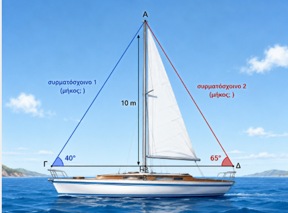
Η Ράμπα του Γκαράζ Ένας μηχανικός θέλει να κατασκευάσει μια ράμπα για ένα υπόγειο πάρκινγκ. Το βάθος του γκαράζ είναι \(B\Gamma = 1,80\text{ m}\) και η κλίση της ράμπας πρέπει να είναι \(\theta = 15^{\circ}\). Να υπολογίσετε:
α) Το μήκος \(A\Gamma\) της επιφάνειας της ράμπας.
β) Την οριζόντια απόσταση \(AB\) από την αρχή της ράμπας έως το κτίριο.
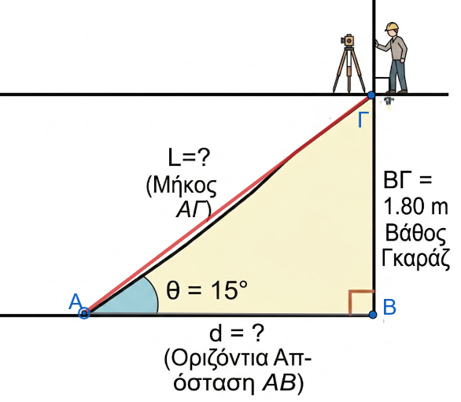
Διάταξη Τριγωνομετρικών Αριθμών Να διατάξετε από τον μικρότερο στον μεγαλύτερο τους παρακάτω τριγωνομετρικούς αριθμούς (χωρίς να τους υπολογίσετε):
α) \(\eta\mu 12^{\circ}, \eta\mu 85^{\circ}, \eta\mu 42^{\circ}, \eta\mu 5^{\circ}\)
β) \(\sigma\upsilon\nu 10^{\circ}, \sigma\upsilon\nu 70^{\circ}, \sigma\upsilon\nu 45^{\circ}, \sigma\upsilon\nu 88^{\circ}\)
γ) \(\varepsilon\varphi 15^{\circ}, \varepsilon\varphi 60^{\circ}, \varepsilon\varphi 35^{\circ}, \varepsilon\varphi 82^{\circ}\)
Η Σκάλα στον Τοίχο Μια σκάλα μήκους \(5\text{ m}\) είναι ακουμπισμένη σε έναν τοίχο ύψους \(6\text{ m}\). Για να είναι σταθερή, η γωνία που σχηματίζει η σκάλα με το έδαφος είναι \(70^{\circ}\). Να βρείτε:
α) Την απόσταση της βάσης της σκάλας από τον τοίχο.
β) Πόσο απέχει η κορυφή της σκάλας από το πάνω μέρος του τοίχου.
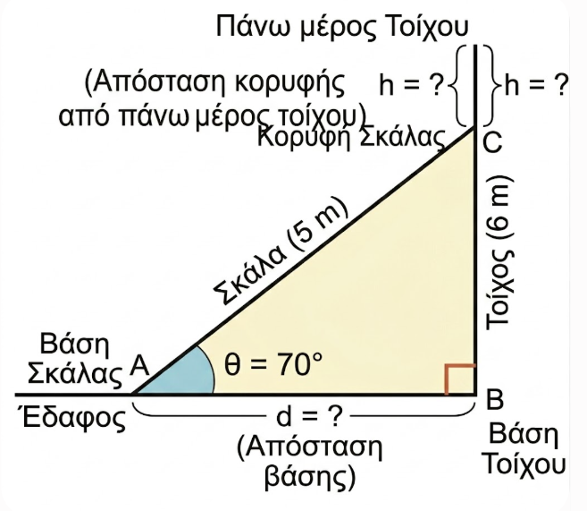
Απόσταση μέσω Ποταμού Ένας τοπογράφος θέλει να βρει την απόσταση ενός πύργου \(M\) που βρίσκεται στην απέναντι όχθη ενός ποταμού από το σημείο \(A\) όπου στέκεται. Επιλέγει ένα σημείο \(B\) σε απόσταση \(AB = 30\text{ m}\) από το \(A\) και μετράει τις γωνίες \(\widehat{ABM} = 84^{\circ}\) και \(\widehat{BAM} = 38^{\circ}\). Να υπολογίσετε την απόσταση \(AM\) (χρησιμοποιώντας το ύψος \(MH\) προς την \(AB\)).
>>> Υπολογίστε πρώτα το ύψος από το τρίγωνο ΑΒΗ.Η γωνία ΒΑΗ είναι συμπληρωματική της ΑΒΜ, άρα η γωνία ΜΑΗ θα είναι …….. Από το τρίγωνο τώρα ΑΗΜ …………..
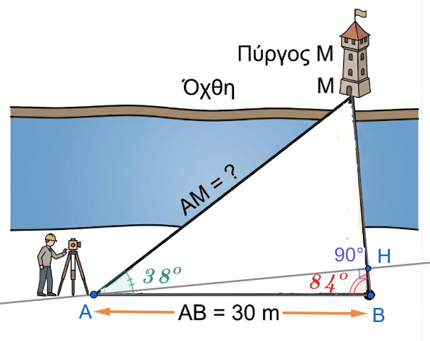
Απόσταση Γης - Τεχνητού Δορυφόρου Ένας δορυφόρος \(Δ\) βρίσκεται σε τροχιά γύρω από τη Γη. Η ακτίνα της Γης είναι \(R = \Gamma A = 6.371\text{ km}\). Από ένα σημείο \(Γ\) της επιφάνειας, ο δορυφόρος φαίνεται υπό γωνία \(\widehat{AΓΔ} = 70^{\circ}\) ως προς το κέντρο της Γης \(Α\), όπου η \(\Gamma A\) είναι κάθετη στην \(AΔ\). Να υπολογίσετε την απόσταση του δορυφόρου από το κέντρο της Γης (\(ΑΔ\)).
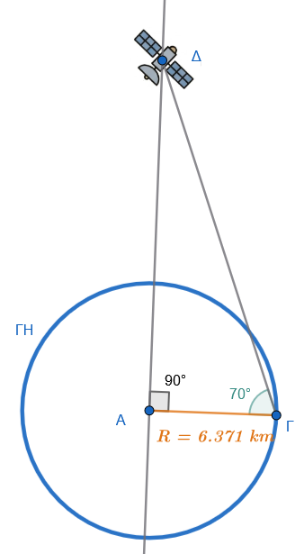
ΚΑΛΗ ΜΕΛΕΤΗ !